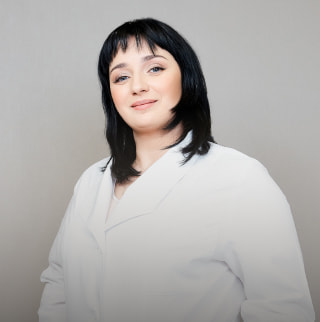
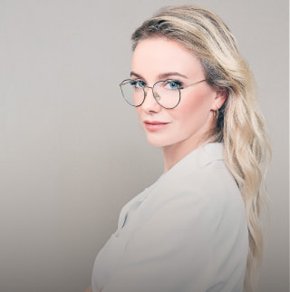
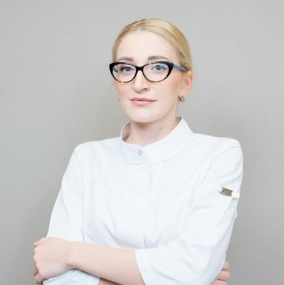
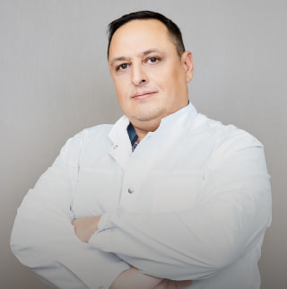

NovaVita — это современная клиника, команда высококвалифицированных специалистов с большим опытом работы
в различных областях медицины.
Клиника предлагает своим пациентам самые современные методы и технологии по диагностике и лечению
различных заболеваний, в том числе самых деликатных.
Мы уверенно сочетаем современный подход в медицине с превосходным уровнем сервиса.
• брюшная полость
• почки
• органы малого таза
• молочные железы
• щитовидная железа

-30%
Гинекологический профосмотр по специальной цене
3990₽ 5600₽-30%
Врач: Жилич Алина Сергеевна
• прием врача акушера – гинеколога
• мазок на флору
• мазок на онкоцитологию
• УЗИ органов малого таза
-20%
Флебология. Специальное предложение на диагностику
от 2750₽ от 3445₽-20%
Врач: Чистякова Ирина Григорьевна
• диагностика варикоза:
Прием + УЗИ вен = 2990 руб (вместо 3500 руб)
• диагностика тромбоза:
УЗИ вен + прием + коагулограмма = 3800 руб (вместо 4750 руб)
• сосудистый минимум перед проведением склеротерапии:
УЗИ вен + коагулограмма + клинический анализ крови = 2750 руб (вместо 3445 руб)
• Сосудистый минимум перед плановой операцией:
УЗИ артерий + УЗИ вен + заключение по результатам исследований для допуска к операции = 4500 руб
(вместо 5100 руб)

Пренатальная диагностика
20 000 ₽
Врач: Искровская Александра Алексеевна
амниоцентез + хромосомный микроматричный анализ
-25%
УЗИ молочных желез и консультация маммолога
3000₽ 4000₽-25%
Врач: Соколова Валентина Ивановна
-30%
Лабораторный чек-ап – скидка 30%
5000₽ 7130₽-30%
Скидка на комплексное исследование крови и мочи (кроме анализа на ПСА)
-30%
Обследование у эндокринолога
5700₽ 8115₽-30%
Врач: Заносова Светлана Анатольевна
диагностический минимум:
- клинический анализ крови
- биохимический анализ крови
АЛТ
АСТ
Билирубин общий
Билирубин прямой
ГГТ
Глюкоза
Креатинин
Мочевина
Общий белок
Белковые фракции
Холестерин общий
Фосфатаза щелочная
Калий, натрий, хлор
- ТТГ, Т4
- Пролактин
- Инсулин
консультация эндокринолога
Мы рады представить вам нашу гордость – Клинику NovaVita, открывшую свои двери осенью 2019 года.
Изначально, задумываясь о создании собственной клиники, мы, будучи экспертами в области акушерства и гинекологии, пренатальной диагностики, планировали сделать акцент на нашей специализации – ведении беременности, в том числе высокого риска, и оказании помощи сложным пациентам, которые столкнулись с проблемами бесплодия, невынашивания.
Развивая наш проект, мы поняли, что в данных случаях зачастую необходима консультация специалистов смежных областей и гораздо лучше иметь свою слаженную команду врачей, способных провести консилиум и вместе установить точный диагноз, а значит, назначить правильное лечение. Так постепенно мы собрали вокруг себя ведущих специалистов города, с многолетним опытом работы и признанием в медицинском сообществе, а Клиника NovaVita из узкоспециализированной превратилась в многопрофильную. Сегодня мы оказываем широкий спектр медицинских услуг, от рутинных исследований до сложных высокотехнологичных вмешательств.
Мы постоянно развиваемся, открываем новые направления и рады оказать нашим пациентам своевременную помощь и теплый прием.
Александра Искровская, генеральный директор
Наталия Писклова, главный врач
ООО "Клиника НоваВита"
Отзывы
Хочу поблагодарить весь коллектив Клиники НоваВита за профессионализм и внимательность, начиная с девочек на ресепшен и медсестер, которые очень аккуратно проводят все процедуры, и конечно, поблагодарить Наталию Михайловну Писклову за спокойное ведение моей такой долгожданной беременности, за ее уверенность, что все под контролем.
Желаю дальнейшего процветания, побольше благодарных пациентов.
Клиника оставила очень хорошее впечатление. Младший медперсонал приветливый. Квалификация лечащего врача на очень высоком уровне.
Понравилось абсолютно все! Расположение клиники, великолепные администраторы! И, конечно же, команда врачей - Писклова Наталия Михайловна и Тюлькина Ольга Александровна!
Врач высшей̆ квалификационной̆ категории Стаж работы 23 года
Направления работы:
ведение беременности высокого риска, в том числе после ЭКО
ведение беременности с невынашиванием в анамнезе и тяжелой соматической патологией
обследование и лечение бесплодия
планирование беременности
подготовка к ЭКО
гинекологическая эндокринология
лечение патологии шейки матки
проведение малых оперативных вмешательств в гинекологии
Сертификаты:
Действующий сертификат по специальности "Акушерство и гинекология" до 05.10.2024 Действующий сертификат по специальности "Организация здравоохранения и общественное здоровье" до 27.04.2024 Образование:
В 1998 году закончила СЗГМУ им. И.И. Мечникова по специальности "Лечебное дело" В 2001 году закончила клиническую ординатуру по специальности ''Акушерство и гинекология" на базе СЗГМУ им. И.И. Мечникова В 2000 году прослушала теоретический курс по теме: "Медикаментозное прерывание беременности, рекомендации по безопасному прерыванию Мифегином" В 2004 году получила вторую квалификационную категорию по специальности "Акушерство и Гинекология" В 2005 году прошла повышение квалификации на цикле "Патология шейки матки. Основы кольпоскопии" в СЗГМУ им. И.И. Мечникова В 2006 году получила первую квалификационную категорию по специальности "Акушерство и Гинекология"
В 2006 году посетила конгресс по теме: "Improving life quality through contraception and reproductive health care" В 2008 году принимала участие в обучающем семинаре "Актуальные проблемы гинекологической эндокринологии". В 2008 году приняла участие в мастер-классе "Патология молочной железы" В 2009 году освоила высокотехнологичные хирургические методики (лазер, криохирургия и высокочастотная электрохирургия) в амбулаторной гинекологии на базе СПбГУ В 2009 году получила высшую квалификационную категорию по специальности "Акушерство и Гинекология"
В 2009 году прошла повышение квалификации в ФГБОУ ВО СПбГПМУ по специализации "Акушерство и Гинекология. Основы репродуктологии" В 2010 году прошла обучение в ФГБНУ «НИИ АГиР им. Д.О. Отта» гинекологическое отделение с операционным блоком по циклу "Избранные вопросы гистероскопии" В 2013 году прошла обучение по теме «Организация экспертизы временной нетрудоспособности с основами медико-социальной экспертизы» (ФГБУ ДПО СПбИУВЭК Минтруда России) В 2013 году принимала участие в научно-практической конференции "Актуальные вопросы диагностики и лечения нарушений репродуктивной функции. Мужское, женское и комбинированное бесплодие" и в общеобразовательном семинаре "Комплексный подход к ведению пациенток с бесплодием и привычным невынашиванием" Прошла лекционный курс по тематике "Современная стратегия ведения пациентов с инфекцией нижних мочевыводящих путей"
В 2013 году принимала участие в обучающем семинаре "Клинические данные и практика: применение и консультирование, введение, удаление и замена Импланона" В 2014 году принимала участие в обучающем семинаре "Безопасный аборт", "Мануальная вакуумная аспирация", "Медикаментозное прерывание беременности". В этом же году прошла цикл повышения квалификации по специальности "Акушерство и гинекология" в СЗГМУ им. И.И. Мечникова Участник семинара "Использование пессариев Доктора Арабин в акушерстве и уро-гинекологии" - 2014 г. Прослушала курс научно-образовательного семинара "Женское здоровье от менархе до менопаузы" – 2014 г.
В 2015 году приняла участие в работе семинара для акушер-гинекологов "Гиперпластические процессы матки" В 2015 году принимала участие в Межрегиональной научно-практической конференции "Гиперпластические заболевания органов репродуктивной системы. Вопросы профилактики, диагностики, лечения" В 2015 году прошла теоретический курс "Шейка матки, влагалище, вульва. Актуальные вопросы диагностики и лечения." В 2018 и 2019 гг принимала участие в ежегодном Всероссийском научно-образовательном форуме "Мать и Дитя"
В 2019 году принимала участие в секционном заседании "Дискуссия экспертов: увидеть невидимое" В этом же году принимала участие в III Международной конференции "Гемостаз, тромбоз и репродукция" В этом же году прошла профессиональную переподготовку по специальности "Организация здравоохранения и общественное здоровье" в ЧОУ ДПО "Высшая школа медицины "Эко-безопасность" В этом же году прошла цикл повышения квалификации по специальности "Акушерство и гинекология" в ПСПбГМУ им. акад. И.П. Павлова В 2019 году прошла цикл повышения квалификации "Экспертиза временной нетрудоспособности" в ЧОУ ДПО "Высшая школа медицины "Эко-безопасность"
Искровская Александра Алексеевна
Акушер-гинеколог, врач ультразвуковой диагностики
Куратор направления "Пренатальная диагностика" Врач высшей квалификационной категории. Стаж работы 15 лет
Направления работы:
проведение всех видов ультразвуковых исследований при беременности группы высокого риска (скрининговые и межскрининговые ультразвуковые исследования, фетометрия, доплерометрия, цервикометрия)
ранняя диагностика пороков развития и маркёров хромосомной патологии плода
участие в проведении пренатальных консилиумов для определения тактики пренатальной диагностики и ведения беременности при различных пороках и особенностях развития плода
проведение ультразвуковых исследований при пороках развития плода
проведение ультразвуковых исследований в гинекологии
Сертификаты:
Действующий сертификат по специальности "Акушерство и гинекология" до 21.06.2023 Действующий сертификат по специальности "Ультразвуковая диагностика" до 06.10.2023 Сертифицированный специалист FMF по проведению комбинированного скрининга хромосомной патологии плода в первом триместре беременности Образование:
В 2006 году закончила лечебный факультет ПСПбГМУ им. акад. И.П. Павлова по специальности "Лечебное дело" В 2008 году закончила клиническую ординатуру по специальности «Акушерство и гинекология» Медицинского факультета СПбГУ В 2008 году прошла профессиональную переподготовку по специальности "Ультразвуковая диагностика" в СЗГМУ им. И.И. Мечникова В 2013 году прошла цикл повышения квалификации по специальности "Акушерство и гинекология'' в СЗГМУ им. И.И. Мечникова
В 2013 году прошла цикл повышения квалификации по специальности "Ультразвуковая диагностика" в ФГБОУ ВО СПбГПМУ В 2017 году прошла цикл повышения квалификации "Внутриутробная диагностика патологии сердечно-сосудистой системы" в ФГБУ "Национальный медицинский исследовательский центр сердечно-сосудистой хирургии им. А.Н. Бакулева" Минздрава России В 2018 году прошла цикл повышения квалификации по специальности "Акушерство и гинекология'' в ФГБОУ ВО СПбГПМУ В 2018 году прошла цикл повышения квалификации по специальности "Ультразвуковая диагностика" в ФГБОУ ВО СПбГПМУ Неоднократный участник конференций и конгрессов:
В 2010-2019 гг принимала участие во Всероссийских конгрессах ISUOG (International society of ultrasound in obstetrician and gynecology) В 2016 году принимала участие во Всемирном конгрессе FMF (Fetal Medicine Foundation), Пальма-де-Майорка, Испания В 2019 году принимала участие во Всемирном конгрессе FMF (Fetal Medicine Foundation), Аликанте, Испания
В 2019 году принимала участие во Всемирном конгрессе ISUOG (Берлин, Германия), в рамках которого получила сертификат "Fetal brain imaging" В 2017-2019 гг принимала участие в конференциях Лондонской Школы Ультразвуковой Пренатальной Диагностики "London school of ultrasound'' и получила сертификаты по циклам "Early fetal scan", "Early echocardiography at 11-13 weeks", "Early neurosonography: brain, spine and face at 11-13 weeks"
Тюлькина Ольга Александровна
Акушер-гинеколог, врач ультразвуковой диагностики
Стаж работы 16 лет
Направления работы:
Проведение всех видов ультразвуковых исследований при беременности (скрининговые и межскрининговые ультразвуковые исследования, фетометрия, доплерометрия, цервикометрия, ультразвуковые исследования плода на ранних сроках беременности)
3D и 4D ультразвуковые исследования в акушерстве
проведение ультразвуковых исследований в гинекологии (УЗИ малого таза, фолликулометрии)
3D и 4D ультразвуковые исследования в гинекологии
проведение ультразвуковых исследований щитовидной железы
проведение ультразвуковых исследований молочных желез
Сертификаты:
Действующий сертификат по специальности "Ультразвуковая диагностика" до 12.12.2020
Сертифицированный специалист FMF (Fetal Medicine Foundation) по проведению:
комбинированного скрининга и расчету рисков хромосомной патологии плода в первом триместре беременности
доплеровского исследования в акушерстве
эхокардиографии плода
цервикометрии
расчету рисков преэклампси
расчету рисков преждевременных родов
Образование:
В 2005 году закончила ПСПбГМУ им.акад. И.П.Павлова по специальности "Лечебное дело" В 2007 году закончила клиническую ординатуру по специальности "Акушерство и гинекология'' на кафедре акушерства и гинекологии № 1 СЗГМУ им.И.И.Мечникова В 2007 году прошла курс повышения квалификации ''Ультразвуковая диагностика в акушерстве и гинекологии" в ФГБОУ ВО СПбГПМУ
2008 году – принимала участие в обучающем цикле "Ультразвуковая диагностика в акушерстве,гинекологии и перинатологии" ФГБУ "Национальный медицинский исследовательский центр акушерства, гинекологии и перинатологии им. акад. В.И. Кулакова" Министерства здравоохранения РФ, Москва В 2009 году прошла цикл "Эхография плода. Доплерометрия и трехмерная эхография в акушерской практике" ФГБУ ФНКЦ ФМБА России
В 2009 году принимала участие в обучающем цикле "Основы кольпоскопии" в ФГБОУ ВО СПбГПМУ В 2010 году прошла первичную переподготовку по специальности "Ультразвуковая диагностика" в ФГБОУ ВО СПбГПМУ В 2010 году принимала участие в учебном курсе "Последние достижения в пренатальной диагностике пороков развития плода" ФГБУ ФНКЦ ФМБА Росси
В 2010 году принимала участие в цикле "Гинекологическая эндокринология" СЗГМУ им. И.И. Мечникова В 2011 году принимала участие в международном учебном курсе "Применение доплеровского исследования в акушерстве" на базе ФГБУ ФНКЦ ФМБА России В 2012 году принимала участие в обучающей программе ''VISUS COURSE GE Healthcare', Санкт-Петербург В 2013 году принимала участие в Международном учебном курсе под эгидой ISUOG «Роль новых технологий в пренатальной диагностике врожденных и наследственных заболеваний плода», Санкт-Петербург
В 2015 году прошла повышение квалификации по специальности "Ультразвуковая диагностика" в ФГБОУ ВО СПбГПМУ В 2015 году принимала участие в обучающей программе «VISUS COURSE GE Healthcare», Санкт-Петербург В 2015 году принимала участие в Международном учебном курсе под эгидой ISUOG "Пренатальная диагностика нарушений развития, хромосомных и генных болезней плода: начало новой эры", Санкт-Петербург В 2016 году принимала участие в Международном учебном курсе под эгидой ISUOG "Пороки развития лица, конечностей, сердца", Санкт-Петербург
В 2017 году принимала участие в Международном учебном курсе под эгидой ISUOG "Актуальные вопросы ультразвуковой диагностики в акушерстве и гинекологии",Санкт-Петербург В 2018 году принимала участие в Международном учебном курсе "Нейросография плода экспертного уровня", ФГБОУ ВО СПбГПМУ В 2019 году принимала участие Международном учебном курсе под эгидой ISUOG "Актуальные вопросы ультразвуковой диагностики в акушерстве и гинекологии", Санкт-Петербург Является членом Российской ассоциации врачей ультразвуковой диагностики в перинатологии и гинекологии, членом FMF (Fetal Medicine Foundation), членом ISUOG (International Society of Ultrasound in Obstetrics and Gynecology)
Соколова Валентина Ивановна
Онколог-маммолог
Врач высшей квалификационной категории Отличник здравоохранения РФ Стаж работы 40 лет
Направления работы:
Выявление онкопатологии на ранних стадиях
Диагностика и лечение фиброзно-кистозного фиброаденоматоза
Диагностика фиброаденом
Диагностика и лечение дисгормональных мастопатий
Диагностика доброкачественных изменений в молочных железах
Диагностика и лечение гинекомастий
Диагностика и лечение лактостазов и нелактационных маститов
Диагностическое наблюдение за определенным контингентом женщин, входящих в группу риска
Наблюдение за женщинами, прошедшими лечение в специализированных учреждениях
Формирование групп риска возникновения злокачественных новообразований молочных желез
Диагностическое наблюдение за больными, входящими в группы риска возникновения злокачественных новообразований молочных желез
Образование:
В 1981 году окончила лечебный факультет Смоленского Государственного Медицинского института по специальности «Лечебное дело»; В 1982 г. прошла интернатуру в Калининградской Клинической областной больнице 1995-1996 гг прошла профессиональную подготовку по специальности "Онкология" в СЗГМУ им. И.И. Мечникова Курсы повышения квалификации:
2018 г. - подтверждение высшей категории 2019 г. - подтверждение сертификата по «Онкологии»
С целью повышения качества работы врач Соколова В.И. обучалась на рабочем месте в следующих медицинских учреждениях:
Московский монологический диспансер (г. Москва);
НМИЦ онкологии им. Н.Н. Блохина (г. Москва);
МНИОЦ им. П.А. Герцена (г. Москва);
НМИИЦ онкологии им. Н.Н. Петрова (г. Санкт-Петербург).
Соколова В.И. принимала участие в работе первого Всероссийского съезда маммологов, во Всесоюзном симпозиуме «Новые информационные технологии в онкологической статистике», во Всероссийской школе онкологов и Международной практической конференции онкологов «Гормонозависимые опухоли». Кроме того, доктор Соколова участвовала в ежемесячных конференциях, проводимых на базе ГКОД для онкологов города, в ежегодных Международных съездах онкологов-маммологов «Белые ночи», г. Санкт-Петербург, а также на регулярной основе участвовала в Российском онкологическом конгрессе, г. Москва.
Жируев Михаил Семенович
Хирург, флеболог
Руководитель флебологического отделения Кандидат медицинских наук Врач высшей квалификационной категории Стаж работы 34 года
Специализация: общая хирургия, сосудистая хирургия, колопроктология, ультразвуковая диагностика, лазерная медицина Направления работы: Флебология
комплексное лечение острых и хронических заболеваний вен нижних конечностей и таза:
- эстетическая миниинвазивная хирургия и склеротерапия варикозной болезни,
- эндовазальная лазерная и радиочастотная термоабляция варикозных вен, - консервативное и оперативное лечение трофических язв,
- оперативное лечение декомпенсированных форм варикозной и посттромботической болезней,
- открытые и эндоваскулярные операции хирургической профилактики тромбоэмболии легочной артерии у пациентов с варикофлебитом, тромбозом глубоких вен, рецидивирующими ТЭЛА
оперативное лечение варикоцеле и геморроя
Ангиохирургия и общая хирургия Колопроктология и лазерная медицина:
выполнение экстренных и реконструктивно-восстановительных операций на периферических артериях
радикальные операции по поводу всех видов вентральных грыж
консервативное и оперативное лечение проктологических заболеваний
операции по поводу новообразований кожи и подкожной клетчатки, заболеваний сухожильно-связочного аппарата.
Образование:
В 1996 г. окончил Калининский государственный медицинский институт В 1987 г. прошел интернатуру по хирургии. 1995 - 1999 гг - обучение в заочной аспирантуре на кафедре факультетской хирургии С-Пб ГМУ им. акад. И.П.Павлова. Курсы повышения квалификации
Октябрь 1988 Всесоюзный научный центр хирургии АМН СССР (Москва) – Специализация на рабочем месте в отделении хирургии печени и желчных путей Ноябрь 1989 Тверская областная больница - Специализация на рабочем месте по урологии Март 1990 Больница №1 г.Твери - Специализация на рабочем месте по травматологии и ортопедии Январь 1991 Больница №51 г.Москвы - Стажировка по лазерным технологиям в медицине Октябрь 1992 Кафедра усовершенствования врачей Тверского государственного мединститута - Сертификационный цикл по теме «Современные проблемы социальной гигиены, экономики, управления и организации здравоохранения» Март-май 1995 Клиника факультетской хирургии СПбГМУ им.акад.И.П.Павлова - Сертификационный цикл по сосудистой хирургии и микрохирургии
Апрель-май 1994 Государственный институт усовершенствования врачей (СПб) - Сертификационный цикл по хирургии с основами микрохирургической техники Июнь-июль 1995 Медицинская академия последипломного образования (СПб) - Цикл усовершенствования по хирургии сосудов Январь 2000 Клиника факультетской хирургии РГМУ (Москва) - Курс специализации «Основы практической флебологии» Февраль-Апрель 2000 Клиника факультетской хирургии СПбГМУ им.акад.И.П.Павлова - Цикл усовершенствования по лапароскопической хирургии органов брюшной полости и эндовидеохирургии Апрель-май 2002 Кафедра хирургической гепатологии и гастроэнтерологии СПбМАПО - Сертификационный цикл по общей хирургии Январь-Февраль 2004 Клиника факультетской хирургии РГМУ (Москва), Федеральный Центр рентгенангиохирургии - Стажировка по эндоваскулярной хирургии и флебологии
Февраль 2005 Клиника факультетской хирургии СПбГМУ им.акад.И.П.Павлова - Курс по амбулаторной онкологии. Май-июнь 2007 ГОУ ДПО СПб МАПО - Сертификационный цикл по общей хирургии Январь-февраль 2008 ГОУ ДПО СПб МАПО - Сертификационный цикл по хирургии сосудов Апрель 2008 Лечебно-реабилитационный центр Росздрава – Практикум по лазерным технологиям в хирургии и терапии вен. Ноябрь-декабрь 2008 Клиника общей хирургии СПбГМУ им.акад.И.П.Павлова - Сертификационный цикл по лазерной медицине Январь-февраль 2009 ГОУ ДПО СПб МАПО - Сертификационный цикл по колопроктологии Июнь 2009 «ON-clinic», Румыния – Практикум по лечению длительно незаживающих ран и трофических язв
Апрель 2011 Клиника «Lympho Opt» профессора Шенгале, Германия – Практикум по лечению декомпенсированных форм хронических заболеваний вен и лимфатической системы, трофических язв Ноябрь 2011 «Lohgman & Rausher», Австрия – Семинар по лечению длительно незаживающих ран и трофических язв Август 2012 «IDA Clinik», Дания – Симпозиум по лечению длительно незаживающих ран и трофических язв Сентябрь-октябрь 2012 ГОУ ДПО СПб МАПО - Сертификационный цикл по общей хирургии Февраль-март 2013 ГОУ ДПО СПб МАПО - Сертификационный цикл «Актуальные вопросы сердечно-сосудистой хирургии» Сентябрь-октябрь 2013 ГОУ ДПО СПб МАПО - Сертификационный цикл по лучевой диагностике Февраль-март 2014 ГОУ ДПО СПб МАПО - Сертификационный цикл по колопроктологии Апрель- май 2015 Клиника общей хирургии СПбГМУ им.акад.И.П.Павлова - Сертификационный цикл по лазерной медицине
Сентябрь-октябрь 2017 ГОУ ДПО СПб МАПО - Сертификационный цикл по общей хирургии Март-апрель 2018 ГОУ ДПО СПб МАПО - Сертификационный цикл «Актуальные вопросы сердечно-сосудистой хирургии» Сентябрь-октябрь 2018 ГОУ ДПО СПб МАПО - Сертификационный цикл по лучевой диагностике Январь-февраль 2020 ГОУ ДПО СПб МАПО - Сертификационный цикл по колопроктологии член секции сердечно-сосудистой хирургии и ангиологии Хирургического общества имени Н.И.Пирогова член Европейского общества сосудистых хирургов (ESVS) 2010 u - успешная защита диссертации на соискание ученой степени кандидата медицинских наук по специальностям "Хирургия. Гериатрия" на тему "Комплексное этапное лечение пациентов пожилого и старческого возраста с хроническими заболеваниями вен нижних конечностей на стадии трофических нарушений". 54 публикации в научно-популярных медицинских изданиях 1 авторское изобретение и 3 рационализаторских предложения

Кошкина Елизавета Константиновна
Акушер-гинеколог, врач ультразвуковой диагностики
Стаж работы – 7 лет
Действующие сертификаты по специальностям:
- «Ультразвуковая диагностика» до 29.12.2022г. - «Акушерство и гинекология» до 03.08.2022г. Направления работы:
УЗД при беременности на всех скрининговых сроках;
УЗД малого таза;
УЗД брюшной полости;
УЗД щитовидной железы;
УЗД почек и мочевого пузыря;
УЗД молочных желез;
Образование:
Закончила Военно-медицинскую академию им. С.М.Кирова в 2014г.
Клиническая ординатура по специальности «Акушерство и гинекология» в СЗГМУ им. И.И. Мечникова.
Профессиональная переподготовка по специальности «Ультразвуковая диагностика» в ФГБОУ ВО СПбГПМУ.
Курсы повышения квалификации:
«Гинекологическая эндокринология» 2015г.
«Патология шейки матки. Кольпоскопия» 2016г.
«УЗД в акушерстве и гинекологии» 2016г.
Принимала участие в симпозиумах и семинарах 2014-2019г.:
«Стратегия преодоления бесплодия у женщин»
«Гиперпластические процессы матки»
«Невынашивание беременности»
«Дискуссионные вопросы современного акушерства»
«Школа гинекологической эндокринологии»
принимала участие в международном конгрессе «Невский радиологический форум»
Принимала участие в международном учебном курсе под эгидой ISUOG « Актуальные вопросы УЗД в акушерстве и гинекологии»
Жилич Алина Сергеевна
Акушер-гинеколог, врач ультразвуковой диагностики
Стаж работы 16 лет
Направления работы:
прегравидарная подготовка
наблюдение беременности с различной соматической патологией,ведение беременных с невынашиванием ,бесплодием в анамнезе,после ЭКО ,постановка акушерского пессария.
гинекологическая эндокринология(нарушения менструального цикла,миома матки,эндометриоз,кисты яичников,заместительная менопаузальная терапия и др.)
лечение ИППП,хронических воспалительных заболеваний придатков и эндометрия,вирусных инфекций
Образование:
2005 г-Новгородский Государственный Университет им.Я.Мудрого.Институт Медицинского Образования(лечебное дело) 2006 г-клиническая интернатура(кафедра Акушерства и Гинекологии при ИМО НовГУ) 2008 г-клиническая ординатура(кафедра Акушерства и Гинекологии при ИМО НовГУ) 2009 г-повышение квалификации "Патология шейки матки .Кольпоскопия." 2009 г-повышение квалификации"Микозы в акушерско-гинекологической практике"
2009 г-повышение квалификации "Акушерство и гинекология.Основы репродуктологии" 2010 г-медикаментозное прерывание беременности.Основы возрастной эндокринологической гинекологии" 2010 г-обучение в проекте "Охрана и поддержка грудного вскармливания в мегаполисе" 2011 г-повышение квалификации по циклу "Актуальные вопросы акушерства и гинекологии " 2013 г-повышение квалификации -сертификат 2015 г- курс по теме"Шейка матки,влагалище ,вульва.Актуальные вопросы диагностики и лечения."
2015 г-повышение квалификации "Эндокринные аспекты репродуктивного здоровья" 2015 г-цикл лекций по теме"Контрацепция у женщин с сопутствующими гинекологическими заболеваниями." 2016 г-специализация "Лазерная Гинекология" 2017 г-профессиональная переподготовка"Ультразвуковая диагностика" 2018 г-повышение квалификации-сертификат

Саад Элиас Инаамович
Уролог
Врач высшей квалификационной категории Стаж работы 32 года
Образование:
1984 (базовое образование) Санкт-Петербургский государственный медицинский университет им. И.П. Павлова 1990 (ординатура) Санкт-Петербургская медицинская академия последипломного образования 1995 (интернатура) Санкт-Петербургский государственный медицинский университет им. И.П. Павлова Курсы:
1989 Название курса: "Клиническая андрология с хирургической сексопатологией" 1990 Название курса: "Ударноволновя литотрипсия при мочекаменной болезни" 1991 Название курса: "Рентгенология" 1997 Название курса: "Стажировка в больнице на отделении хирургии", г. Байсур, Ливан
1999 Название курса: "Полугодовая стажировка в больнице города Лион", Франция 2011 Название курса: "Ультразвуковая диагностика" 2013 Название курса: "Эндоурология" 2015 Название курса: "Урогинекология" 2017 Название курса: "Андрология и хирургическое лечение органических сексуальных расстройств" 2018 Название курса: "Онкоурология"
Халимбекова Джамилат Ильясовна
Онкогинеколог
Кандидат медицинских наук Врач высшей квалификационной категории Стаж работы – 13 лет
Направления работы:
Диагностика и лечение всех видов онкологической гинекологической патологии, онкологической маммологической патологии. Владение эндовидеохирургическими методами проведения гинекологических операций. Проведение органосохраняющих операции по поводу онкологии. Оказание помощи в сохранении фертильной функции у пациенток с раком. Сертификаты:
Действующий сертификат по специальности "Онкология" до 26.06.2023 Действующий сертификат по специальности "Акушерство и гинекология" до 20.11.2020 Образование:
Диплом по специальности "Лечебное дело (Лечебно-профилактическое дело)", Дагестанская государственная медицинская академия (2008 г.) Ординатура по специальности "Акушерство и гинекология", Российская медицинская академия последипломного образования, кафедра акушерства и гинекологии (2010 г.) Курсы повышения квалификации:
"Онкология", Северо-Западный государственный медицинский университет им. И.И. Мечникова (2010 г.)
"Современные технологии в медицинском последипломном образовании" (2011 г.)
"Ультразвуковая диагностика в акушерско-гинекологической практике" (2013 г.)
"Актуальные аспекты эндоскопической хирургии в абдоминальной онкологии и онкогинекологии" (2013 г.)
"Современные методики контроля знаний и активизации учебного процесса" (2014 г.)
"Кольпоскопия" (2015 г.)
Смолина Инна Викторовна
Акушер-гинеколог, врач ультразвуковой диагностики
Врач первой квалификационной̆ категории Стаж работы – 8 лет
Опыт работы врачом акушером-гинекологом в различных отделениях родильного дома, гинекологического отделения, врачом акушером-гинекологом и врачом ультразвуковой диагностики на базе женской консультации. Общий врачебный стаж 15 лет. Действующие сертификаты по специальности: «Акушерство и гинекология», «Ультразвуковая диагностика» Направления работы:
проведение всех видов ультразвуковых исследований при беременности (скрининговые исследования , межскрининговые исследования, фетометрия, допплерометрия,цервикометрия)
диагностика пороков развития и ультразвуковых маркеров хромосомных аномалий у плода в ранние сроки и в течение беременности
проведение ультразвуковых исследований при одноплодной и многоплодной беременности
проведение 3D, 4D- исследований в акушерстве и гинекологии
проведение ультразвуковых исследований в гинекологии
проведение инвазивной пренатальной диагностики
консультация по вопросам проведения и видам инвазивной пренатальной диагностики во время беременности, акушерским особенностям при проведении ИПД.
Член Российской ассоциации врачей ультразвуковой диагностики в перинатологии и гинекологии.
Сертифицированный специалист FMF для проведения комбинированного скрининга в 1 триместре беременности с целью расчета риска хромосомной патологии у плода, преждевременных родов, преэклампсии у беременной. Неоднократный участник Российских и международных форумов и конференций по вопросам ультразвуковой диагностики в акушерстве и гинекологии, диагностике врожденных пороков развития плода, прогнозе и тактике ведения беременности при особенностях развития плода.
{kind=link}
{kind=link}
{kind=link}
{kind=link}
{kind=link}
{kind=link}
 УЗИ молочных желез и консультация маммолога3000₽ 4000₽-25%Врач: Соколова Валентина Ивановна
УЗИ молочных желез и консультация маммолога3000₽ 4000₽-25%Врач: Соколова Валентина Ивановна


 Наш адрес
Наш адрес
 График работы
График работы